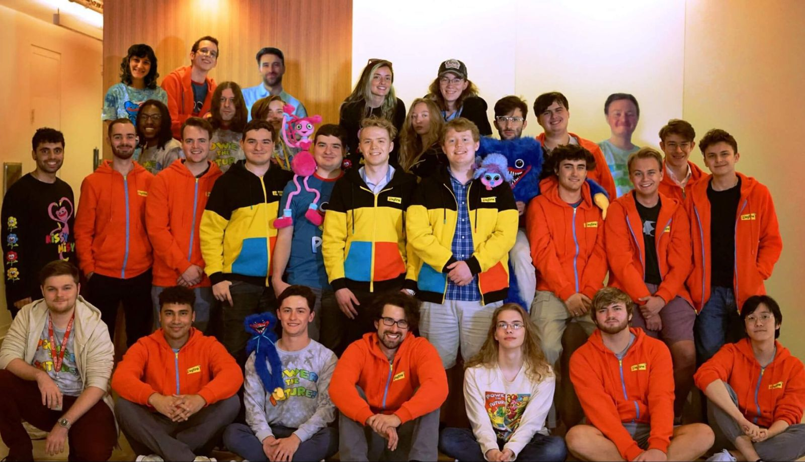

Mob entertainment

Mob Entertainment, anteriormente EnchantedMob, Inc., es una empresa multimedia reconocida a nivel mundial, fundada por dos hermanos unidos por su pasión común por las artes.
Mob Entertainment fue fundada originalmente en 2015 por el actual Director Creativo Seth Belanger y el actual Director Ejecutivo Zach Belanger. Seth comenzó en la escuela secundaria con un canal de YouTube llamado EnchantedMob, donde empezó a construir una base de seguidores publicando videos musicales animados en 3D, con la guía y los consejos de su hermano mayor. A lo largo de los siguientes años, Seth continuó creando contenido de entretenimiento de calidad que atrajo a millones de personas en todo el mundo.
Durante el resto de la carrera escolar de Seth y la universitaria de Zach, ambos elaboraron un plan estratégico a varios años para llevar la empresa al siguiente nivel. Como parte de esa visión, alquilaron una oficina y se mudaron a San Luis, Misuri, en el verano de 2020.
Por esta época, EnchantedMob cambió oficialmente su nombre a Mob Entertainment para marcar el comienzo de una nueva era para el negocio. Aunque nuestro enfoque principal es crear animación y juegos, Mob Entertainment tiene la intención de continuar incursionando en nuevos medios que nos permitan entretener y deleitar al público de todo el mundo.
Hoy en día, Mob Entertainment es una empresa próspera e impulsada por la creatividad, que continúa persiguiendo incansablemente la producción del contenido de la más alta calidad posible, mientras se adapta a la industria del entretenimiento en constante cambio. Además, busca crear un entorno de trabajo emocionante para las personas talentosas que están detrás de todo, y, por encima de todo, crear historias que entretengan e inspiren.